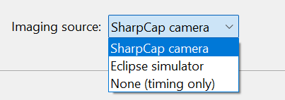
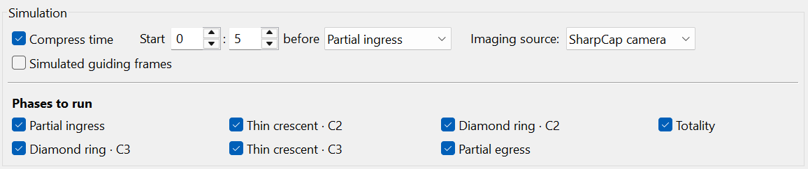
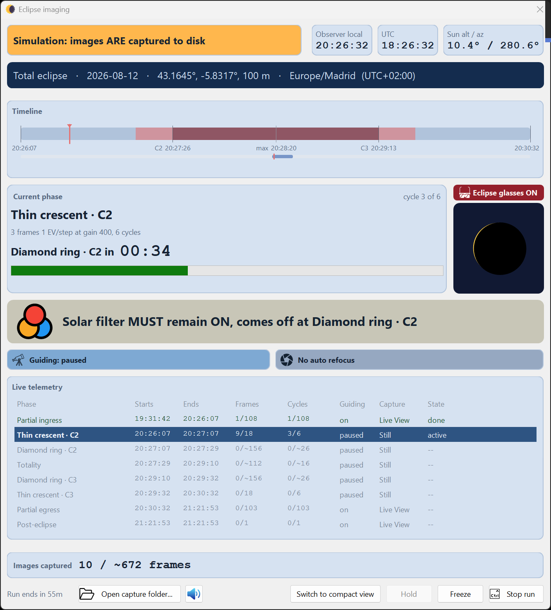

Rehearsal is the whole point. HelioMaker can run the sequence without a real eclipse, from a
timing rehearsal to a synthetic capture that exercises the HelioMaker capture path.
Practise on past eclipses too
Combine these options with the planner's date range search on a real historical total eclipse for your site, and rehearse
the whole flow end to end. There is no substitute for having done it before. → Planner
basics
Choose the imaging source
The key control is the Imaging source: dropdown. It decides what the run captures from:

Choose whether the rehearsal uses the physical SharpCap capture path, HelioMaker's internal eclipse
simulator or timing and cues only.
Imaging source
What it does
Use it for
SharpCap camera
Captures from your real camera through SharpCap Pro. This is the true "wet" path, including the SharpCap
agent, HDR, capture format, file naming and latency. Use it with the suitably filtered real Sun to test the
complete camera path.
Real capture; the most faithful rehearsal of the SharpCap chain.
Eclipse simulator
HelioMaker renders synthetic eclipse frames internally and writes them as if captured, bypassing
SharpCap. This provides a self contained "wet" rehearsal.
Fast iteration; exercising the capture/timing path without SharpCap or a camera.
None (timing only)
No capture at all. In this "dry" run, the clock advances through the phases and the cues and refocus schedule
fire, but no frames are taken.
Learning the console, cues and filter change timing.
"Dry" vs "wet", in plain terms
A dry run is None (timing only): timing and cues, with no frames. A
wet run is any source that actually captures: SharpCap camera (real or
synthetic feed) or the Eclipse simulator. Start dry to learn the flow, then go wet to
exercise capture, cadence, filenames and disk.
Time compression & start point
Rehearsals don't have to run in real time. In the Simulation options:
Compress time speeds the run up so you can rehearse the whole event, or just the
critical minutes, without waiting hours.
A start control (Start … before <phase>) lets you begin the rehearsal a set time
before a chosen phase, so you can jump straight to practising the C2 diamond ring transition instead of sitting
through the partials every time.
The planner's footer has an Eclipse plan rehearsal... button to launch a simulated run
directly (the live run is started by the Start eclipse imaging button).

Use time compression and the start offset to concentrate a rehearsal on the phases you want to
practise. Clear any phase that you do not need in this run.
Future SharpCap simulation path (DirectShow)
The internal Eclipse simulator is quick but bypasses SharpCap. To rehearse the
real SharpCap path without an eclipse, HelioMaker's rendered frames can be fed into a DirectShow virtual
camera that SharpCap sees as an ordinary camera. This would allow the SharpCap agent, HDR bracketing, capture format and file
naming to run against synthetic content. You would then choose SharpCap camera as the
imaging source.
Not available in the current build
The DirectShow simulation feed is a planned path and is not currently integrated into HelioMaker. Use the
integrated Eclipse simulator for synthetic capture rehearsals and a session on the
filtered real Sun to test the actual SharpCap path.
A sensible rehearsal ladder
None (timing only): learn the flow, cues and refocus timing.
Eclipse simulator: confirm capture, cadence, filenames and disk usage within
HelioMaker. A simulated run now makes the same shutter sounds as a real one, paced by the plan's own cadence,
so this step rehearses what eclipse day will sound like as well as what it will look like.
Filtered real Sun on an ordinary day: validate the actual SharpCap camera path, Sun detection,
partial phase behavior, guiding and focus.
Repeat, with Compress time on, until nothing about the run is unfamiliar. →
The run console

The simulation console identifies that images are being captured to disk. Its timeline, cues,
guiding, refocus schedule and phase telemetry let you rehearse the complete operating flow.